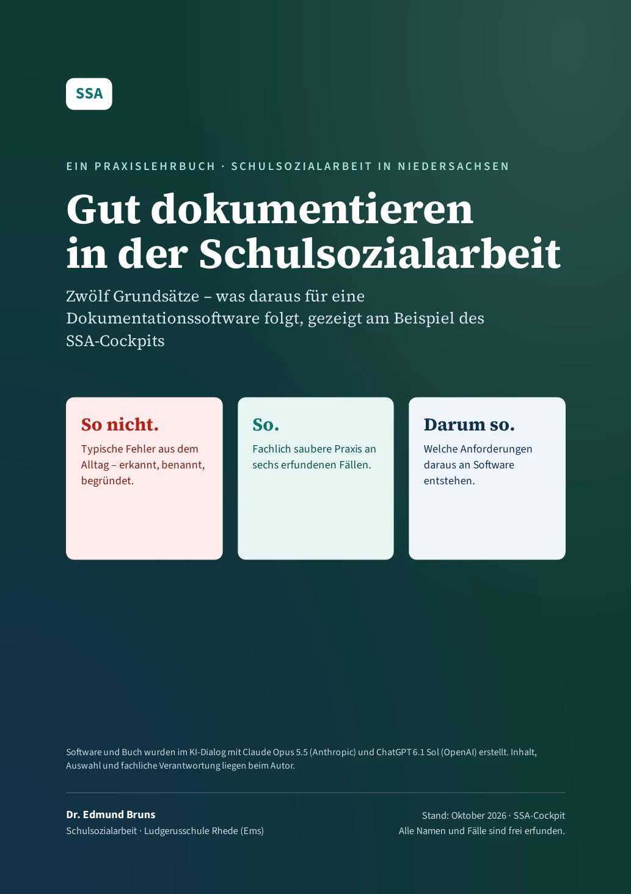
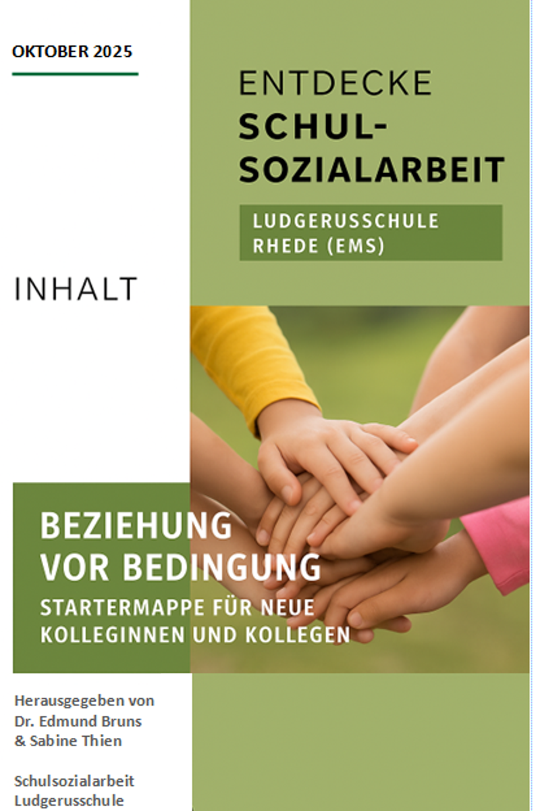
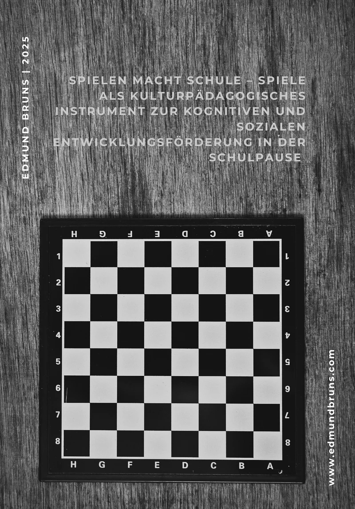

Neu · Oktober 2026Gut dokumentieren in der Schulsozialarbeit
Art: PraxislehrbuchStatus: online veröffentlicht, Oktober 2026Umfang: 57 Seiten, PDF
Zitiervorschlag: Bruns, Edmund (2026). Gut dokumentieren in der Schulsozialarbeit. Praxislehrbuch. Online: www.edmundbruns.com/publikationen/
Ein Praxislehrbuch zur fachlich sauberen und alltagstauglichen Dokumentation. Zwölf Grundsätze werden an sechs frei erfundenen Fällen entwickelt und in konkrete Anforderungen an Dokumentationssoftware übersetzt.
Alle Personen und Fälle im Buch sind frei erfunden.
 Neu · Oktober 2026
Neu · Oktober 2026Der Klassenrat von Klasse 1 bis 10
Art: PraxisheftStatus: online veröffentlicht, Oktober 2026Umfang: 26 Seiten, PDF und Word
Zitiervorschlag: Bruns, Edmund (2026). Der Klassenrat von Klasse 1 bis 10. Praxisheft für Niedersachsen. Online: www.edmundbruns.com/schulsozialarbeit/klassenrat/
Praxisheft für Niedersachsen mit Rechtsrahmen, Sitzungsablauf, Rollen, Schutzregeln, drei Fällen, sieben Kopiervorlagen und einem Materialpaket für Klasse 1 bis 4.
Mai 2026Wenn Reden nicht der erste Schritt ist.
Art: FachbeitragStatus: online veröffentlicht, Mai 2026Umfang: Webseite
Schulsozialarbeit braucht manchmal andere Zugänge: ein Schachbrett, ein Stück Holz oder ein Rätsel können Räume öffnen, in denen Beziehung, Vertrauen und Entwicklung entstehen. Die Arbeit zeigt, wie solche Methoden fachlich begründet und praktisch eingesetzt werden können.

StartermappeStartermappe
Art: Informationsmappe für das AnerkennungsjahrStatus: Arbeitshilfe, keine Online-Fassung
Informationsmaterial für neue Kolleginnen und Kollegen in der Schulsozialarbeit im Berufsanerkennungsjahr. Die Mappe bündelt organisatorische Hinweise, Kontaktinformationen, Aufgabenbereiche und Reflexionshilfen.
- Orientierung an Schule und Team
- Aufgabenfelder der Schulsozialarbeit
- Stundenpläne und Abläufe
- Checklisten und Praxisvorlagen
- Kommunikationswege und Ansprechpartner:innen
- Haltung, Reflexion und Qualitätssicherung

März 2025Schachmatt dem Schulalltag!
Art: FachtextStatus: März 2025, keine Online-Fassung
Schulpausen sind mehr als Verschnaufpausen. Sie sind kleine Inseln der Gemeinschaft, Kreativität und Konzentration. Der Text fragt, warum Spiele in Schulpausen, insbesondere Schach, soziale Kompetenz, Resilienz und Geduld fördern können.